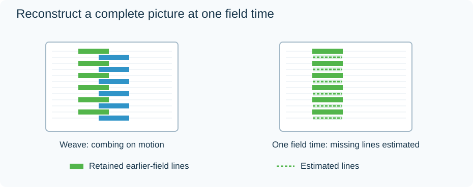

Deinterlacing
Deinterlacing turns alternating fields into complete pictures suitable for progressive display. Its difficult case is motion: the two fields were captured at different times, so simply weaving their lines together can produce comb-like edges.

Original reduced-line schematic. The reconstruction illustrates the principle of retaining one field's time and estimating its missing lines; it is not a measured output from a named filter.
| Approach | Useful property | Typical limitation |
|---|---|---|
| Weave both fields | Retains existing lines in a static area | Moving edges can comb |
| Reconstruct from each field | Can retain every field's motion time | Missing lines require estimation |
| Blend fields | Can soften combing | Moving objects can leave double edges |
| Motion-adaptive reconstruction | Treats static and moving regions differently | Accuracy depends on detecting motion correctly |
Algorithms can combine these ideas; the rows describe principles rather than four exclusive codec modes.
The output rate matters
A native 50-field/s source contains 50 motion times each second. Generating one complete picture per field produces 50p output and can preserve that motion cadence. Generating one picture per pair produces 25p output and generally retains fewer temporal samples. Corresponding fractional-rate examples are 59.94p and 29.97p.
For Emby playback, deinterlacing can happen in the player or during server transcoding, depending on the route and capabilities. Check the delivered video's scan type and rate when a broadcast recording becomes less fluid after conversion. A “1080” height alone does not show whether its motion cadence survived.
Correct field order is essential: reversing the temporal order can create backward steps. A progressive picture flagged as interlaced should not automatically be processed as native interlaced capture.
For a clean film pulldown sequence, inverse telecine may recover original complete pictures more faithfully than estimating their missing lines. Mixed material needs processing that handles the changes between film and video sections.